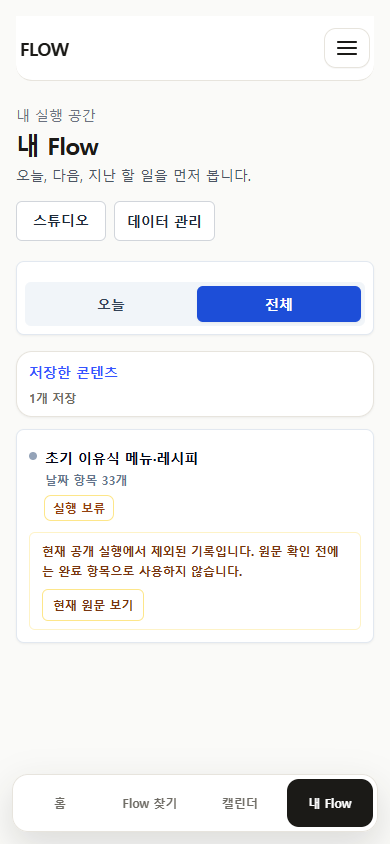
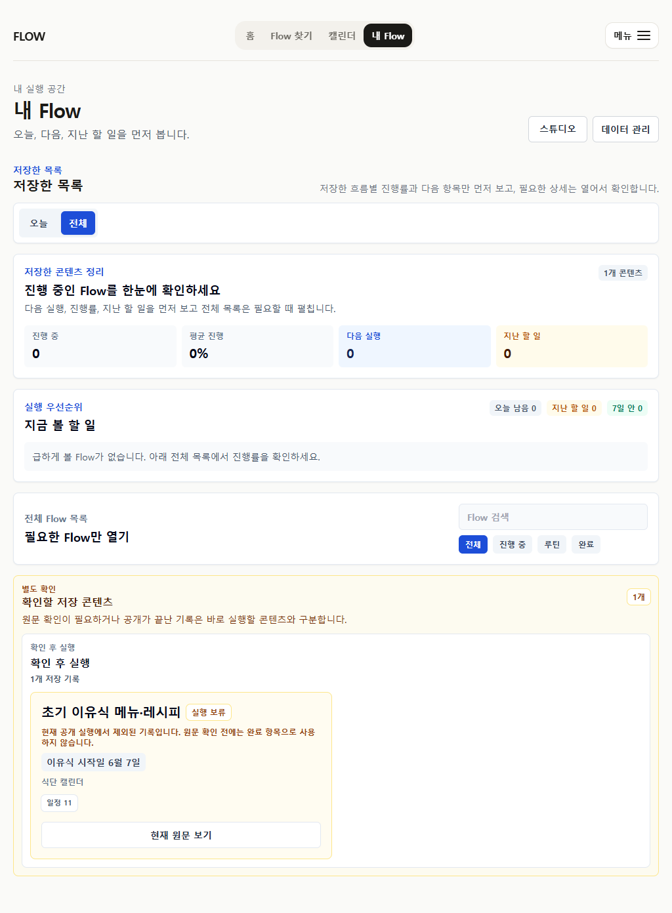

보존
- 개인 원문 URL과 게시·수정·재확인 날짜
- 11개 메뉴 slot과 11개 recipe record
- 기존 사용자의 저장 기록과 원문 접근
2026-07-12 · medical-sensitive source currentness
개인 경험 식단표의 게시·수정 이력, 현재 공식 안내, FlowMe의 33일 실행 변환을 따로 비교했습니다. 원문과 기존 기록은 보존하되 신규 공개 저장과 Calendar 실행은 닫았습니다.
원문 URL은 열리지만, 한 아기의 시작 시점과 재료 순서를 모든 아이의 33일 일정으로 자동 배치할 근거는 아닙니다. 공식 안내는 엄격한 식품 순서가 없고 개별 상황에 맞춰야 한다고 설명합니다.
/f/baby-food-menu-recipe 신규 실행질병관리청 이유기보충식 안내는 2026-05-12 업데이트됐으며, 모든 아이에게 같은 절대 지침을 적용하지 않고 개별 상황을 고려하도록 설명합니다. WHO 2023 지침도 약 6개월부터의 보충식, 다양성, 반응적 먹이기를 근거 중심으로 다룹니다.



자동화와 화면 점검은 완료했지만 실제 보호자·의료 전문가 관찰 세션은 0건입니다. 향후 재공개는 공식 근거 중심의 사용자 선택형 기록 모델을 별도 검증한 뒤 판단해야 합니다.